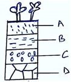
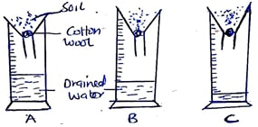
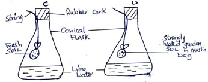

SECTION A (75 MARKS)
b) State four harmful effects of wind in crop production. (3 mks)

elow is a diagram illustrating a soil profile study it carefully and answer the questions that follow.
A____________
B___________
C_________
D____________
23. The diagram below shows an experiment set up using different soil type A,B and C.
The observation was made after 24 hours.

A________
B________
C_______

C_____________________( 1mk).
D_____________________(1 m k)
D_______________(1 mk)
Is the science and art of crop and animal/livestock production.
2.)
- Tilling of the land.
Construction of farm structures
Measuring distances
Operating machines
Crop harvesting
Feeding animals
Marketing agricultural produce 1x4 mks)
3.)
- Crop pathology
Entomolgy
Agricultural engineering
Soil Science
Genetics ( 1x4 mks)
4.)
- It is a source of raw materials for industries
It provide market for industrial goods.
It is a source of capital to establish industries.( 1x2=2 mks)
5.)
- It is source of food supply
Help the nation to earn foreign exchange
Provide employment to citizens
Provide capital through taxation leading to national development. 1x3 mks)
6.)
Crop production
Livestock production
Agricultural economics
Agricultural engineering
Soil science (1 x 5 mks)
7.)
Level of technology
Availability of land
Capital
Skilled labour (1X4)
8.)
Require large tracts of land
Require high capital instrument
Mechanization is common
Processing of the product in the farm
Provide more employment
Skilled labour
High level management
Carried out for commercial purposes. (1X4)
9.)
- Limited capital
Small land sizes. 1 x 2)
10.)
Growing of fruits such as avocado, mangoes and citrus.(1x1mk)
11.)
- In search of better pastures
In search of water (1 x 2 mks)
12.)
- Wind
Rain
Light
Temperature
Relative humidity (1 x 4 mks)
13.)
Involves growing of trees and crops and keeping of animals on the piece of land. (1x1mk)
14.)
- Low production/low yield
A lot of time wasted in movement
No inventive to develop land.
Require large piece of land
Possible for only animal crops. (1x4 mks)
15.)
- Shortage of labour in the farm
Increased cost of labour
Reduced agricultural production/low food supply and poverty.
Poor agricultural development due to lack of capital (1X 2 mks)
16.)
- Level of education and technology
Economy
Government policy
Transport and communication
Cultural practices and Religious beliefs
Market forces. ( 1x4 mks)
17.)
- Amount
Distribution
Intensity
Reliability
Form (1x4 mks)
18.)
- Pests
Parasites
Decomposers
Pathogens
Predators
Pollinators
Nitrogen Fixing bacteria (1 x 5)
19.)
- Farmers gets sustainable income throughout the year crops and livestock have mutual benefit.
Animals provide labour to work in the crop fields
Resources such as land and labour are used economically.( 1x4)
20.)
a) High incidence of disease infection to crops eg CBD.
Improved quality of crops eg. tea and pyrethrum .
- Slow growth rate of crops due to reduced photosynthesis rate.
b) Causes lodging of crops
- Cuases soil erosion
- Spread of diseases and pests
- Destroying farm structures
- Increases evapotranspiration leading to wilting of plants.
21.)
Long – day
Short – day
Day - Neutral
SECTION B
22.)
i) - A – Top soil/zone A/Horizon C
B – Subsoil/Zone B/Horizon B
C – Substratum/weathered rocks/Zone C /Horizon C
ii)-More fertile/organic matter accumulation
Better aerated and moist
More micro-organisms/soil microbes
Holds root of plants
Well drained
Contain most plant nutrients
(iii) Parent rock material
Climate
Topography
Time
Vegetation
23.)
(a) Drainage of the soil
(b) Sandy soil
Loam soil
Clay soil
(c) Influences soil aeration affecting crop growth and microbial activity affect soil drainage.
Influences the water holding capacity of soil.
(d) Soil structure – Physical appearance of the soil according to the way soil particles are arranged, packed or aggregated / arrangement of soil particles or aggregate.
Soil texture – Relative proportions of the various sizes of mineral particles in a soil sample / coarseness or fineness of soil when felt between the fingers.
24.)
(a) To show the presence of living organisms in the soil.
(b) C – lime water turns milky
D – Lime water remain clear
(c) C - Carbon dioxide produced during respiration by living organisms present in the soil
Turns lime water milky.
D - The lime water remains clear because the living organisms in the soil had been
Killed, therefore no respiration occurred and no carbon dioxide was released.